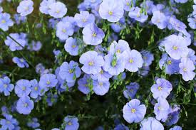

The Efemeral Blue Flex
I am continually amazed at the bealtiful , delicate Blue flex that somehow took hold in my garden. They are awash in color every morning, yet not a single flower remains by the afternoon. They are the very definition of efemeral.
© Blue flex Society.